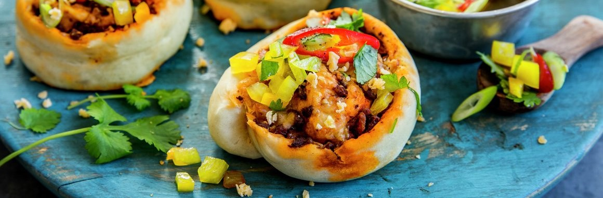

SUSTAINABLE RECIPES
LEFTOVER TACO ROLLS
Got some leftovers from the taco night? Try these easy taco rolls!
- 7 dl all purpose flour (use wholewheat if you want them a bit healthier)
- 3 dl lukewarm water
- 1 packet of dry yeast
- 1 teaspoon of salt
- 3 tablespoons of oil
- 1/2 box chopped tomatoes
- 1 onion (leftovers from the taco)
- The rest of the taco meat
- The rest of the vegetables (like corn and bell peppers)
- 150g shredded cheese (leftovers from the taco)
Step 1: Mix the packet of dry yeast with the water, and let it sit until the dry yeast has dissolved
Step 2: Add flour, salt and oil - mix well
Step 3: Let the dough rest and rise somewhere warm for 30 to 60 minutes, can be a hot bathroom floor or in a sink with warm water
Step 4: Set the oven to 225 degrees celsius (425 fahrenheit)
Step 5: Roll out the dough (might need a bit more flour if it's sticky)
Step 6: Mix the tomatoes in a bowl together with some spices of own desire, like basil and garlic, and pour it onto the dough
Step 7: Add the leftover taco meat and vegetables
Step 8: Add the cheese
Step 9: Roll the dough together, and cut into equally large rolls
Step 10: Bake for 15 to 18 minutes, until the cheese has completely melted and the rolls are nice and golden
CARROT SOUP
This is a delicious and healthy soup you can make from leftover ingredients!
You can also
replace some of the ingredients with something you need to finish!

- 1 onion
- 2 cloves of garlic
- 2 tablespoons of ginger
- 1 chili
- 4 carrots
- 5 dl water
- 1 package vegetable broth
- 1/2 container chickpeas
- 1 dl cream
- 1/2 lime
- 1/3 fresh coriander
Step 1: Chop onion, garlic, ginger and carrots
Step 2: Fry these vegetables in a casserole with some oil or butter until the onion is shiny
Step 3: Add the vegetable broth and water, and boil until the carrots are soft
Step 4: Add chickpeas and cream, and use a stick blender to mash the soup
Step 5: Add lime, coriander, salt and pepper to taste
Step 6: Serve with some garlic bread!